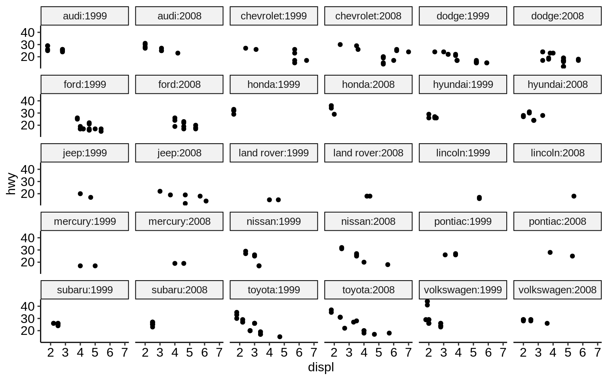
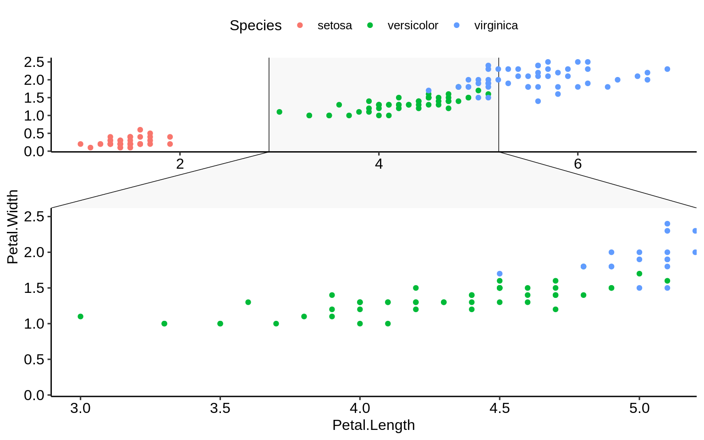

3 {ggplot2} advanced
3.1 Facetting
Click here to show setup code.
“Facetting” (or trellis plots, lattice plots) denotes an idea of dividing a graphic into sub-graphics based on the (categorical) values of one or more variables of a dataset.
The variables used for faceting should be passed encapsulated in vars().
(Before {ggplot2} v3.0.0 the default was to use a formula notation (<variable> ~ <variable>) to specify the faceting variables.)
facet_grid(facets = vars(<variable>),
scales = "fixed",
...)
facet_wrap(rows = vars(<variable>),
cols = vars(<variable>),
scales = "fixed",
...)facet: Variables given via vars() or formula with splitting variable.
scales: Scale of the axes over the sub-graphics.
The position of <variable> in facet_wrap() denotes on which axis the facets will appear:
vars(<variable>)\(\rightarrow\) y-axisvars(), vars(<variable>)\(\rightarrow\) x-axis

3.1.1 facet_wrap()
ggplot(mpg, aes(displ, hwy)) +
geom_point(aes(colour = fl)) +
scale_color_nejm() +
facet_grid(vars(), vars(year))
ggplot(mpg, aes(displ, hwy)) +
geom_point(aes(colour = fl)) +
scale_color_nejm() +
facet_grid(vars(year), vars()) 

Rather than visualizing a 2D-facet plot on x and y, there is also the option to combine both in one axis.
(For this to work, the variables need to be of class factor).
mpg %>%
mutate(manufacturer = as.factor(manufacturer)) %>%
mutate(year = as.factor(year)) %>%
ggplot(aes(displ, hwy)) +
geom_point() +
facet_wrap(vars(manufacturer:year))
This is usually a better setting than doubling the facet labels - but might also be up to personal preference.

3.1.2 facet_grid()
While facet_wrap() tries to act smart and hide non-existing combinations of sub-plots, facet_grid() will create a full matrix of sub-plots for all possible combinations.
Most of the time when using only one categorical variable, facet_wrap() does a good job and is preferred over facet_grid().
However, facet_grid might be preferred in the following cases:
when faceting over >= 2 variables
when plots of empty combinations should be shown
Let’s compare how facet_grid and facet_wrap differ for 2 grouping variables where not all combinations of those contain observations:


3.1.3 Scales
By default, scales are fixed across each facet (scales = "fixed").
This means that all sub-plots should share the same axes.
By setting this argument to either "free_x" or "free_y" one can specify that each each sub-plot should have its own scale.
ggplot(mpg, aes(displ, hwy)) +
geom_point() +
facet_grid(vars(year), vars(cyl), scales = "free_x") +
theme_pubr(base_size = 7)
This only makes sense if the ranges for each facet differ substantially (so not in this example!). This example is good to show the confusion that this setting might introduce. People usually expect to look at equal ranges across facets (unless there is a good reason for it not to) and differing scales make the plot more complicated.
Keep in mind: Visualization should simplify data!
3.1.4 Renaming of facet labels
A non-trivial change that is often applied to facet plots is the (re-)naming of the facet labels.
Facet labels are automatically created based on the factor levels of the respective variable.
However, sometimes the raw factor levels are not descriptive enough.
In these cases, it makes sense to prefix the factor level values with the column name.
This can be achieved by setting the labeller argument of facet_* to label_both.
(An alternative would be to modify the underlying factor levels of the data so that these are descriptive right from the start.)

Exercises
3.2 Extensions
A mass of R packages extending {ggplot2} exists. Many are listed at http://www.ggplot2-exts.org/gallery/.
Here is a selected list of our favorite {ggplot2} extensions including some use examples.
{ggsci}: https://nanx.me/ggsci/
{ggforce}: https://ggforce.data-imaginist.com/
{patchwork}: https://patchwork.data-imaginist.com/
{gganimate}: https://gganimate.com/
{ggtext}: https://github.com/clauswilke/ggtext
{ggiraph}: http://davidgohel.github.io/ggiraph
{ggbeeswarm}: https://github.com/eclarke/ggbeeswarm
{esquisse}: https://dreamrs.github.io/esquisse
( {ggstatsplot}: https://indrajeetpatil.github.io/ggstatsplot )
( {ggedit}: https://github.com/metrumresearchgroup/ggedit )
( {lindia}: https://github.com/yeukyul/lindia )
Click here to show setup code.
3.2.1 {ggsci}
p1 <- ggplot(mpg, aes(manufacturer)) +
geom_bar(aes(fill = fl))
p2 <- ggplot(mpg, aes(displ, hwy)) +
geom_point(aes(colour = fl))library("patchwork")
p1_npg <- p1 + ggsci::scale_fill_npg()
p2_nejm <- p2 + ggsci::scale_color_nejm()
p1_npg + p2_nejm
3.2.2 {ggforce}
ggplot(iris, aes(Petal.Length, Petal.Width, colour = Species)) +
geom_point() +
ggforce::facet_zoom(x = Species == "versicolor")
3.2.3 {gganimate}
ggplot(gapminder, aes(gdpPercap, lifeExp, size = pop, colour = country)) +
geom_point(alpha = 0.7, show.legend = FALSE) +
scale_colour_manual(values = country_colors) +
scale_size(range = c(2, 12)) +
scale_x_log10() +
facet_wrap(~continent) +
labs(title = 'Year: {frame_time}', x = 'GDP per capita', y = 'life expectancy') +
gganimate::transition_time(year) +
ease_aes('linear')## Warning: No renderer available. Please install the gifski, av,
## or magick package to create animated output## NULL3.2.4 {ggtext}
df <- data.frame(
label = c(
"Some text **in bold.**",
"Linebreaks<br>Linebreaks<br>Linebreaks",
"*x*<sup>2</sup> + 5*x* + *C*<sub>*i*</sub>",
"Some <span style='color:blue'>blue text **in bold.**</span><br>And *italics text.*<br>
And some <span style='font-size:18pt; color:black'>large</span> text."
),
x = c(.2, .1, .5, .9),
y = c(.8, .4, .1, .5),
hjust = c(0.5, 0, 0, 1),
vjust = c(0.5, 1, 0, 0.5),
angle = c(0, 0, 45, -45),
color = c("black", "blue", "black", "red"),
fill = c("cornsilk", "white", "lightblue1", "white")
)ggplot(df) +
aes(
x, y,
label = label, angle = angle, color = color,
hjust = hjust, vjust = vjust
) +
ggtext::geom_richtext(
fill = NA, label.color = NA, # remove background and outline
label.padding = grid::unit(rep(0, 4), "pt") # remove padding
) +
geom_point(color = "black", size = 2) +
scale_color_nejm() +
xlim(0, 1) + ylim(0, 1) +
theme_pubr()
3.2.5 {ggrepel}
no_repel <- ggplot(mtcars, aes(wt, mpg)) +
geom_text(label = rownames(mtcars), size = 3) +
geom_point(color = "red") +
theme_pubr()with_repel <- ggplot(mtcars, aes(wt, mpg)) +
ggrepel::geom_text_repel(label = rownames(mtcars), size = 3) +
geom_point(color = "red") +
theme_pubr()
3.2.6 {ggiraph}
3.2.7 {ggbeeswarm}

3.2.8 {ggpmisc}
p <- ggplot(mpg, aes(factor(cyl), hwy)) +
stat_summary(geom = "col", fun.y = mean, width = 2 / 3, aes(fill = factor(cyl))) +
labs(x = "Number of cylinders", y = NULL, title = "Means") +
scale_fill_nejm(guide = FALSE)
data.tb <- tibble(
x = 7, y = 44,
plot = list(p +
theme_pubr(8))
)ggplot(mpg, aes(displ, hwy)) +
ggpmisc::geom_plot(data = data.tb, aes(x, y, label = plot)) +
geom_point(aes(colour = factor(cyl))) +
scale_colour_nejm() +
labs(
colour = "Engine cylinders\n(number)"
) +
theme_pubr()